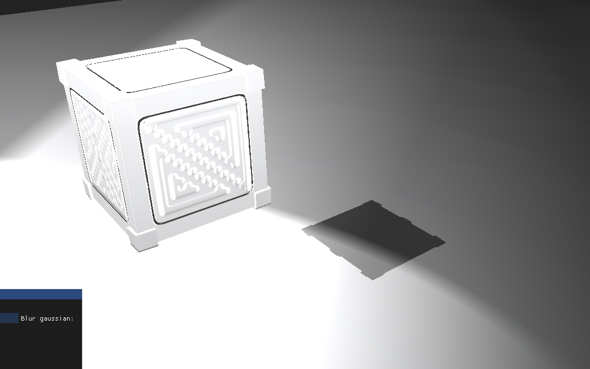
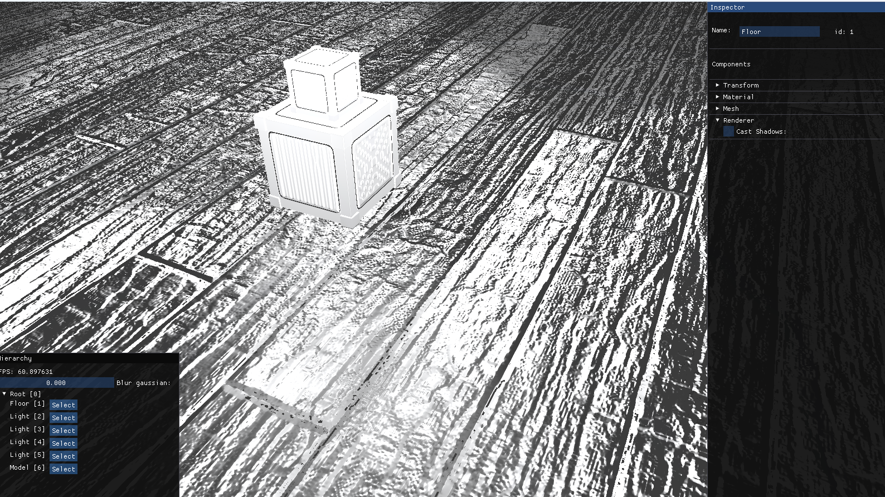
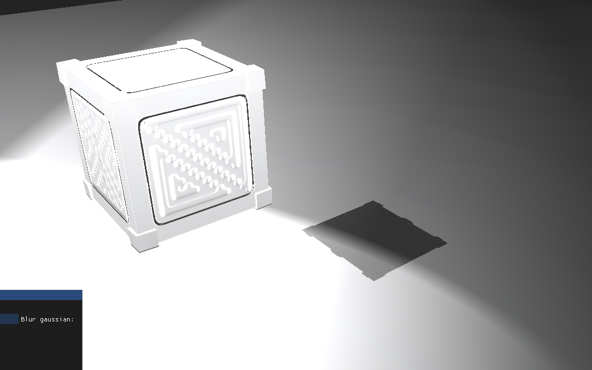
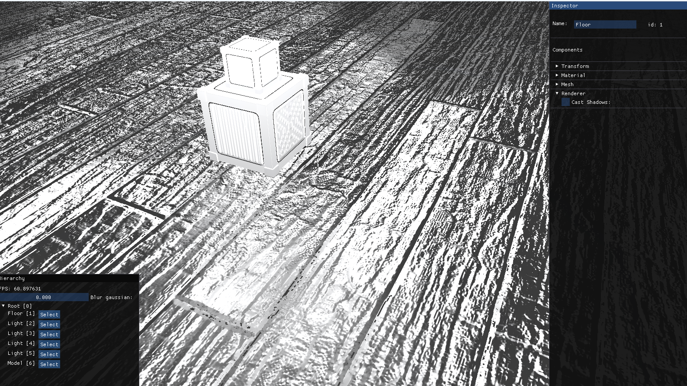
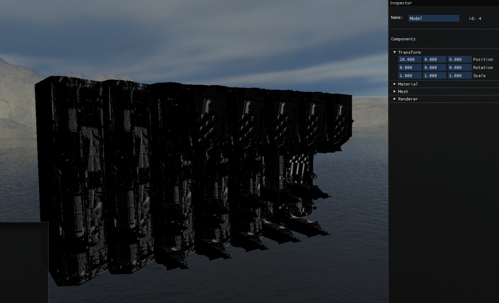

Berserk Engine
Berserk Engine is a graphics engine I developed during my studies in ESAT.
It was developed using OpenGL, from scratch. It is an engine in which we implemented a series of
rendering techniques in order to gain experience with graphics programming using C++.
Features
- Entity Component System (ECS)
- 3D Camera
- Dynamic illumination (Ambient, Directional, Point and Spot Lights)
- Audio System with Miniaudio
- Normal Mapping
- Skybox
- Shadow Mapping
- Deferred rendering
- Post processing (Blur)
- Draw Instancing
Captures
Shadows
 



Draw Instancing & Skybox
Project information
- Category: C / C++
- Made by:: Jesús Royo Carabal, Joel Salas Martos, Enrique Gil Tercero